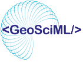

GeoSciML
GeoSciML is a data model and data transfer standard for geological data. Information about GeoSciML, including the current version, documentation and previous versions, is now on the CGI website.
Go to GeoSciML on cgi-iugs.org
The documentation, XML schemas and vocabularies on this site stay at their existing addresses, such as geosciml.org/schemas/, geosciml.org/doc/ and geosciml.org/resource/. Links to them, including schemaLocation references in XML documents, keep working.
The CGI vocabularies used with GeoSciML are maintained in the GeoscienceAustralia/cgi-vocabs repository and can be browsed at cgi.vocabs.ga.gov.au.
GeoSciML is maintained by the IUGS Commission for the Management and Application of Geoscience Information (CGI) and the Open Geospatial Consortium.